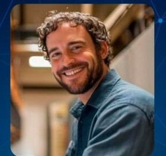

Fecha
Sábado 24 de octubre
Una jornada dedicada a la ciencia, la tecnología y la ingeniería.
Universidad Mariano Gálvez de Guatemala
Título de la convención
Ciencia · Tecnología · Ingeniería · Coding & Programming
Fecha
Una jornada dedicada a la ciencia, la tecnología y la ingeniería.
Hora
Inicio de actividades en punto de la mañana.
Lugar
Salón Campo de la Feria.
Edición XIV
La XIV Convención de Ciencia y Tecnología reúne a la comunidad de la Facultad de Ingeniería del Centro Universitario de Retalhuleu. El eje de las ponencias es Coding & Programming.
Falta para la convención
Sobre la convención
Universidad Mariano Gálvez de Guatemala, a través de su Centro Universitario de Retalhuleu.
La Facultad de Ingeniería impulsa este espacio de actualización, divulgación y encuentro académico.
Ponencias de Coding & Programming dentro de la XIV Convención de Ciencia y Tecnología.
Por qué asistir
Tres ingenieros comparten su experiencia en Coding & Programming.
Un punto de encuentro de la Facultad de Ingeniería en Retalhuleu.
Inicia a las 8:00 a.m. el sábado 24 de octubre, en un solo salón.
Ponentes
Tres ponencias en el eje de Coding & Programming.
Coding & Programming

Coding & Programming
Coding & Programming
Eje de la edición
La convención articula ciencia y tecnología alrededor de la programación, con tres intervenciones del mismo eje temático.
Divulgación y actualización para la comunidad universitaria.
Herramientas y prácticas del desarrollo de software.
La Facultad de Ingeniería como sede académica del encuentro.
Tema de las tres ponencias confirmadas para esta edición.
Lugar
San Felipe, Retalhuleu. Abre Google Maps para ver la dirección y calcular la ruta.
Organiza
Registro
Escríbenos por WhatsApp para confirmar tu asistencia.
WhatsApp +502 5975 5017